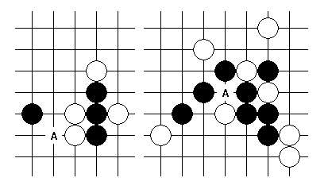
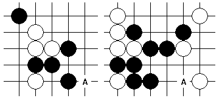
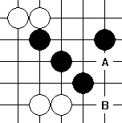

http://hi.baidu.com/%C6%C1%B1%CE/blog/item/3ff7e4f2174dad1eb17ec57a.html
做杀是重要的进攻技巧之一。它应当属于VCT的一种，同时有别于直接的活三、冲四进攻，是通过“构造可能的VCF”这一方式来完成的。
做杀首先可以分为两个大类：单式做杀和复式做杀。单式做杀是指仅仅构成一套可能的VCF，且做杀点在构成的整套VCF中只被利用一次，或者说形成的唯一的VCF的线路可以通过直接的活三、冲四的进攻手段来代替（仅仅在线路上代替，不一定考虑反击）；复式做杀则是指上述单式做杀以外的做杀方式，包括构成多套VCF，或者做杀点在VCF中利用多次，甚至有可能包含一部分单式做杀。如下图所示：

（左：单式做杀右：复式做杀）
在单式做杀中，第一要点是“控制对手的防守”，第二要点则是“增加自己可能的连接”，我在这里要重点解释一下――第一要点是一定实现的，而第二要点只是有可能实现的。见上图：就一般的做杀来说，将可能的连续攻击简化为一步做杀，而对手也只能防守一步，这样就必然导致了对手的防守变弱；同样在上图中，白棋不论如何防守，必然留下一个活二或一个眠三，这就让黑棋在后续的进攻中可以再次利用这些材料，特别是选择与原做杀时的进攻线路有所差异的进攻方案。
同样在上图中，我们可以看到，复式做杀可以从一个完全没有活二、眠三的进攻材料的局面中创造出VCF。但在复式做杀中，并没有类似于单式做杀中的这些要点的概念，因为在做杀形成之前并无明确的进攻线路存在。尽管如此，复式做杀通常更加引人入胜，效果经常也更好，关于复式做杀是如何建立优势的理论还需要进一步做分析。
此外，我想稍微提一下围绕禁手的做杀，其实这种做杀方式并未超出上述讨论的两大分类的范畴，不过是围绕禁手展开而已，希望引起大家的重视，但我并不准备在这里继续展开了。以下举两个例子。需要注意的是，有时由于禁手的存在，单式做杀也无法直接通过活三、冲四走出。

最后，我提出在做杀过程中经常应用于实战的三个关键，希望对大家有所帮助：
一、VCF点位检查
做杀之所以有别于占据所有进攻要点的一般活三、冲四，就在于提供了对手直接防在VCF点位（不仅仅是线路上）的防守方式――当然这种防守方式可能给进攻方带来好处，因此，检查这些VCF点位被占据之后的局面形势是非常重要的，可以帮助判断是否应该选择做杀或直接活三、冲四进攻。

（A点做杀后，VCF点位B可以被白棋反击抢回先手，因此应当考虑直接进攻的方式。）
二、分离式做杀
在单式做杀（或是在复式做杀中的单式做杀部分）的某一步中存在这样的概念：当白棋用一子不能同时防住一步四三的两个要素――眠三和活二时，这种做杀方式就给进攻方提供了额外的进攻方式，一般表现为“四三点”周围一圈没有活二的组成子力，即在防守眠三时活二不能消除。见第一图。
三、重复线路进攻
在复式做杀中，当一子做出多套VCF时，要么构成可以取胜的双杀或多杀，要么防御方将存在关键线路或关键点来防守，一般体现在两套VCF共用一个活二或眠三，那么防守方只能直接防住这个活二或眠三。这对于实战中的计算是巨大的便利，同时也给了进攻方对防守的判断一个清晰的思路。
（左：做杀后共用活二右：做杀后共用眠三）
棋局千变万化，希望大家能够在掌握理论的同时合理应用到实际，不要拘泥于现有的知识，纸上谈兵。
［此帖子已被 有志青年 在 2010-6-22 17:43:02 编辑过］
屏蔽老师说的复式做杀，不知道是不是可以理解为散棋做4，3。而散棋做4，3的原型则是根据2和2交叉。当然，这里面的2可以做进一步变形，原理不变